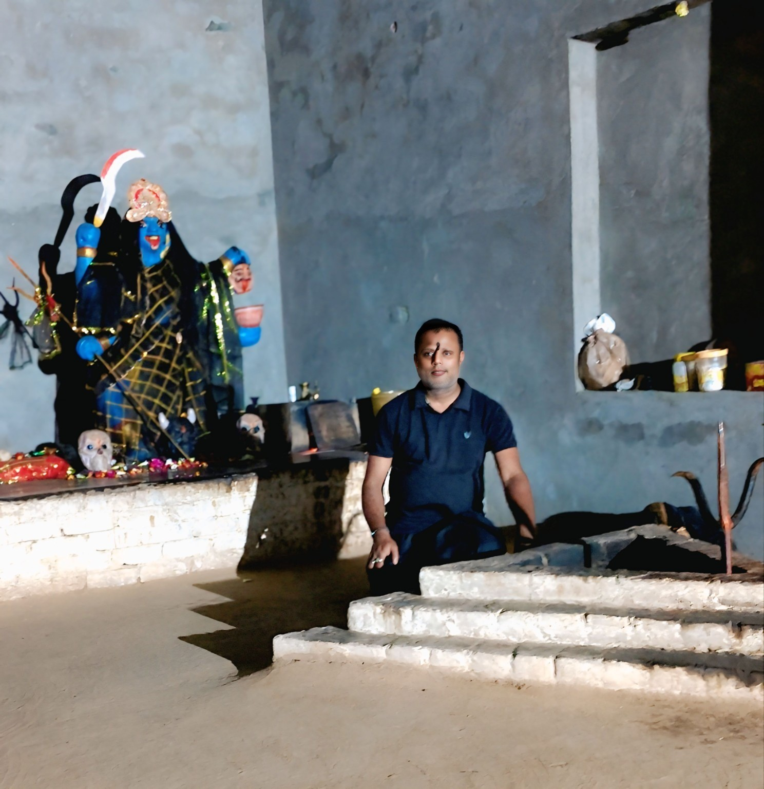
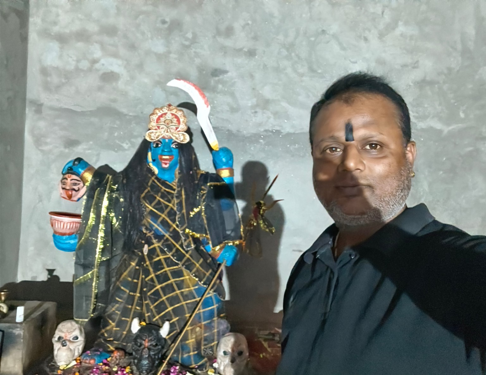
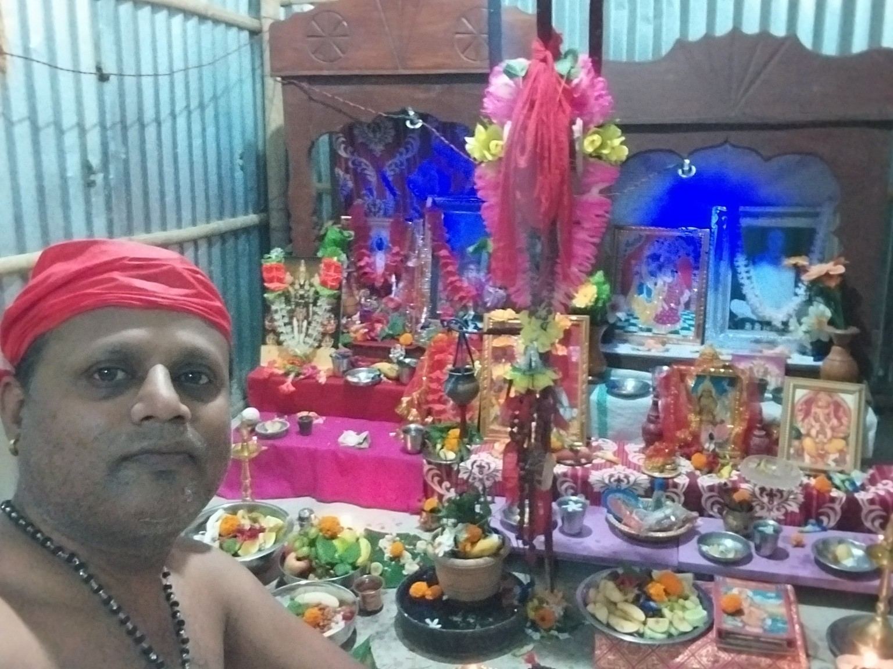
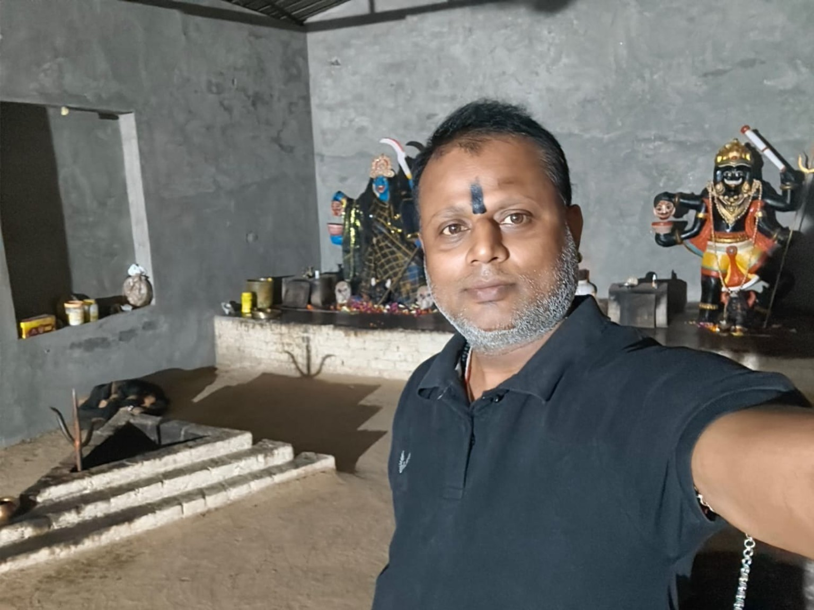
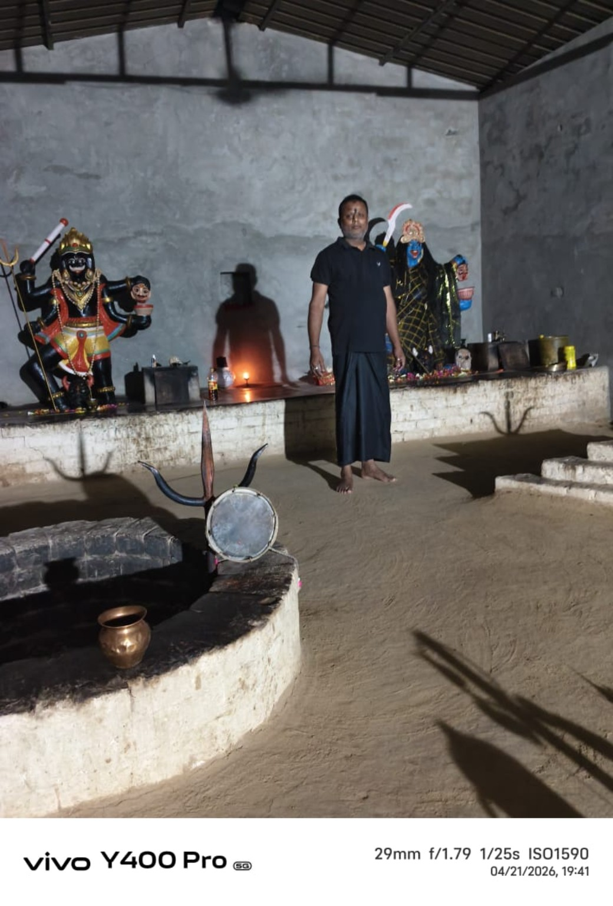

Shiv Bhairav Tantra Kaat
हमारे बारे में
परंपरागत आध्यात्मिक ज्ञान और साधना से जुड़ी जानकारी को सरल रूप में प्रस्तुत करने का प्रयास।

आध्यात्मिक मार्गदर्शन
Shiv Bhairav Tantra Kaat में तंत्र-मंत्र, साधना, मंत्र-जप, कवच और आध्यात्मिक विषयों से संबंधित पारंपरिक जानकारी साझा की जाती है।
किसी भी साधना को श्रद्धा, संयम और जिम्मेदारी के साथ करना चाहिए। यहां दी गई जानकारी को आध्यात्मिक/पारंपरिक मार्गदर्शन के रूप में देखें; परिणाम व्यक्ति और परिस्थिति के अनुसार अलग हो सकते हैं।
नोट: किसी भी कानूनी, चिकित्सकीय या वित्तीय समस्या के लिए संबंधित योग्य पेशेवर की सलाह भी लें।
कवच एवं सेवाओं की सूची
सभी विषय क्रमांक के साथ।
रुद्र कवच
रुद्र उपासना एवं पारंपरिक रक्षा-साधना से संबंधित जानकारी।
मोहिनी कवच
पारंपरिक मान्यताओं में वर्णित मोहिनी साधना से संबंधित ज्ञान।
वशीकरण कवच
परंपरागत मंत्र-साधना के संदर्भ में जानकारी।
राजमोहिनी कवच
पारंपरिक साधना और आध्यात्मिक अनुशासन से जुड़ा विषय।
मातंगी कवच
मातंगी उपासना से संबंधित पारंपरिक ज्ञान।
तारा कवच
तारा साधना और मंत्र-जप की पारंपरिक जानकारी।
धूमावती कवच
धूमावती उपासना से संबंधित पारंपरिक विषय।
बगलामुखी कवच
बगलामुखी साधना के पारंपरिक संदर्भ।
नवग्रह कवच
नवग्रह उपासना एवं ज्योतिषीय परंपराओं से जुड़ी जानकारी।
धंधा कवच
व्यवसाय और समृद्धि से जुड़ी पारंपरिक मान्यताओं का परिचय।
प्रजापति कवच
पारंपरिक आध्यात्मिक साधना से संबंधित विषय।
बंधन कवच
बंधन संबंधी लोक-परंपराओं और आध्यात्मिक दृष्टिकोण की जानकारी।
राशि कवच
राशि एवं ज्योतिषीय परंपरा से संबंधित आध्यात्मिक जानकारी।
सूर्य कवच
सूर्य उपासना, जप और पारंपरिक विधियों का परिचय।
रक्षा कवच
आध्यात्मिक सुरक्षा और पारंपरिक रक्षा-उपासना से जुड़ी जानकारी।
सर्व बाधा निवारण कवच
पारंपरिक मान्यताओं में बाधा-निवारण से संबंधित विषय।
सर्व तंत्र-मंत्र काट
तंत्र-मंत्र संबंधी लोक-मान्यताओं और आध्यात्मिक दृष्टिकोण का परिचय।
सुरक्षा कवच
सुरक्षा और आध्यात्मिक अनुशासन से जुड़ा पारंपरिक विषय।
नज़र दोष निवारण
नज़र दोष से जुड़ी पारंपरिक मान्यताओं और उपायों की जानकारी।
घर बंधन
घर से संबंधित पारंपरिक आध्यात्मिक अवधारणाओं का परिचय।
दुकान बंधन
व्यापार-स्थल से जुड़ी पारंपरिक मान्यताओं की जानकारी।
कोर्ट-कचहरी मार्गदर्शन
कठिन परिस्थितियों में आध्यात्मिक सहारा और सामान्य मार्गदर्शन।
लव मैरिज मार्गदर्शन
विवाह और संबंधों से जुड़े आध्यात्मिक/परामर्शात्मक विषय।
सर्व यंत्र ज्ञान
यंत्रों के पारंपरिक आध्यात्मिक उपयोग का परिचय।
फोटो गैलरी
साधना स्थल और उपलब्ध फोटो।





प्रमाणपत्र
आपके द्वारा उपलब्ध कराया गया प्रमाणपत्र।
Regd. No.: IV - 130100052
परामर्श के लिए संपर्क करें
भारत (INDIA) — फोन और WhatsApp द्वारा संपर्क।
WhatsApp पर संदेश भेजें
नाम, अपनी समस्या/प्रश्न और पसंदीदा समय लिखकर संदेश भेजें।
📲 WhatsApp चैट शुरू करेंFacebook और Instagram के आपके व्यक्तिगत प्रोफाइल लिंक मिलने पर इन्हें सीधे आपके प्रोफाइल से जोड़ा जा सकता है।